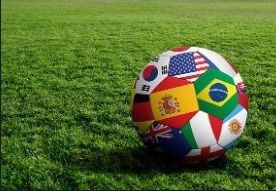

O Brasil é o único país que participou de todas as Copas do Mundo até hoje. Além disso, é o único país que conquistou cinco vitórias nas Copas do Mundo. E mais: foi o primeiro país a conquistar Copas do Mundo em três continentes diferentes. Por causa disso, tem muita história para contar.
Para introduzir, a Copa do Mundo é um evento que ocorre a cada quatro anos, e é organizado pela FIFA. Atualmente, é o maior evento de futebol de todo o mundo. Ele envolve seleções de diversos países que, para participar, precisam passar nas qualificatórias. Como já foi dito, o Brasil é o único país que passou em todas elas. Nesse evento, somente um país é o campeão.
Mas o que o Brasil já conquistou? Como o Brasil ficou nas copas anteriores? O que já está sendo planejado para a próxima Copa?
O Brasil é conhecido não só pelas praias, pelo carnaval, pela sua comida e sua cultura. Para muitos, ele é conhecido como o “país do futebol”. E isso não é à toa, já que sempre está nas mais altas colocações nos placares do esporte. Com a Copa do Mundo não é diferente, pois já ganhou não uma, não duas, muito menos três, mas cinco Copas: 1958, 1962, 1970, 1994 e 2002.
Na copa de 1958, realizada na Suécia, o Brasil ganhou pela primeira vez uma edição da Copa. Vencendo dois dos três jogos da fase de grupos e empatando em um, garantiu vaga na final, contra o país sede, a Suécia, contra o qual venceu de 5x2.
Assim como na copa de 1958, durante a fase de grupos de 1962, que foi realizada no Chile, o Brasil teve duas vitórias e um empate. Seu último jogo foi contra o mesmo time com o qual empatou na fase de grupos, a Tchecoslováquia, contra quem fez incríveis três gols contra um.
Em 1970, no México, o Brasil teve finalmente três vitórias na fase de grupos, e, na final contra a Itália, teve uma vitória impressionante de 4x1.

24 anos depois, após seis copas, o Brasil cansou de perder, e em 1994, nos Estados unidos, ganhou dois e empatou um jogo na fase de grupos. Na final, disputou pela segunda vez o troféu com a Itália. Após ficar empatado no 0x0 durante o jogo, o Brasil ganhou de 3x2 nos pênaltis.
Em 2002, na Coreia do Sul, o Brasil teve sua última vitória na Copa do Mundo até o momento, ganhando os três jogos da fase de grupos, e vencendo a final por 2x0 contra a Alemanha.
É importante citar, também, que já houve uma edição realizada no Brasil, a Copa do Mundo de 2014. Sua mascote foi Fuleco, um tatu-bola com as cores da bandeira: verde, amarelo e azul.
Quanto à Copa do Mundo de 2022, que é discutida no mundo todo, inclusive no Brasil, milhões de pessoas esperam ansiosamente a sua chegada. Ainda falta muito tempo para esse evento, mas o Brasil já está disputando as Eliminatórias Sul-Americanas.
Até agora, temos conseguido bons resultados, vencendo todos os seis jogos que disputamos e ficando na primeira posição no ranking dos países da América do Sul. Com o início da Copa América, a próxima rodada ocorrerá apenas no começo de setembro.
Como ainda faltam 12 rodadas para o fim das Eliminatórias Sul-Americanas, elas terminarão apenas em março do ano que vem. Os quatro primeiros países se classificarão para a Copa do Mundo de 2022.
Até este momento, o Brasil conseguiu um bom desempenho nos jogos que disputou. Agora, só nos resta esperar para ver como vamos nos sair nas próximas rodadas. Até lá, ainda temos tempo para aperfeiçoar o nosso modo de jogo e, assim, garantir uma vaga na próxima Copa.